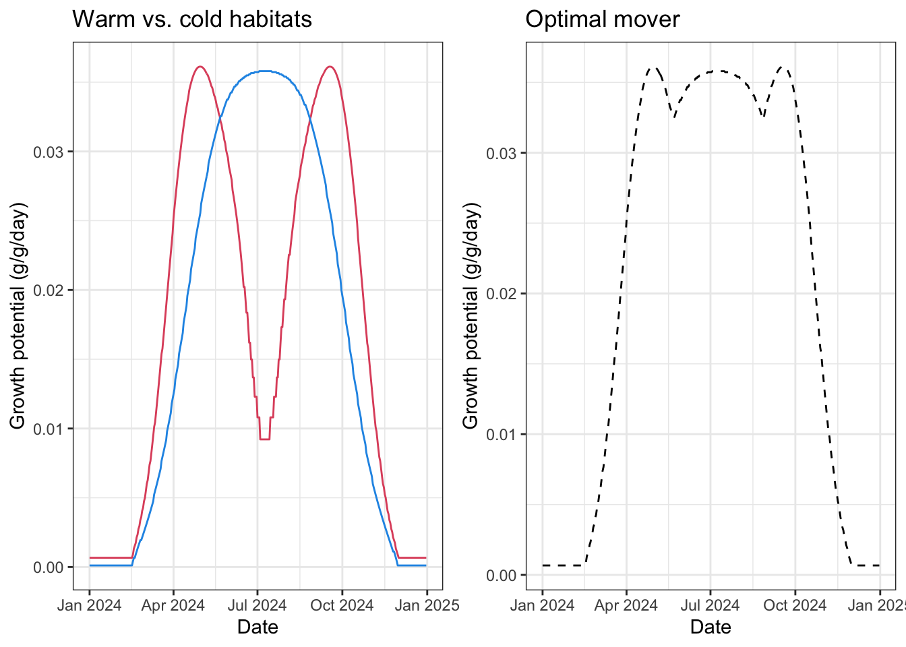
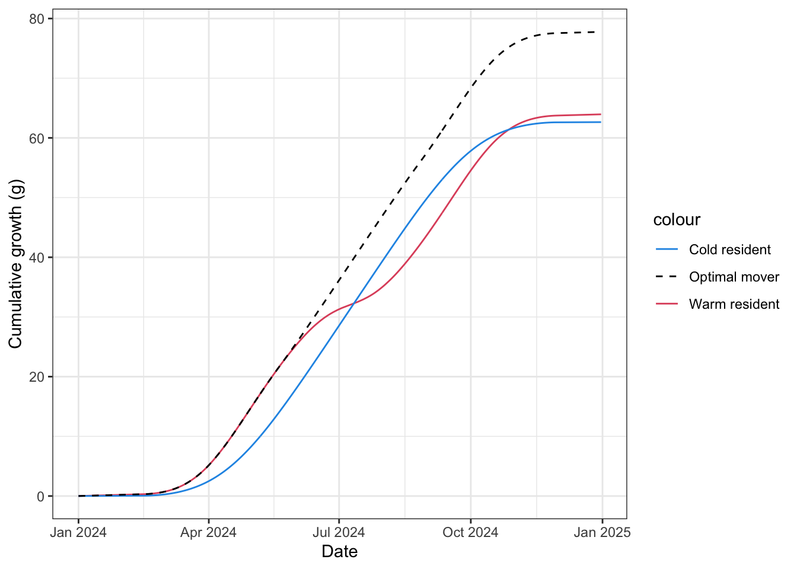
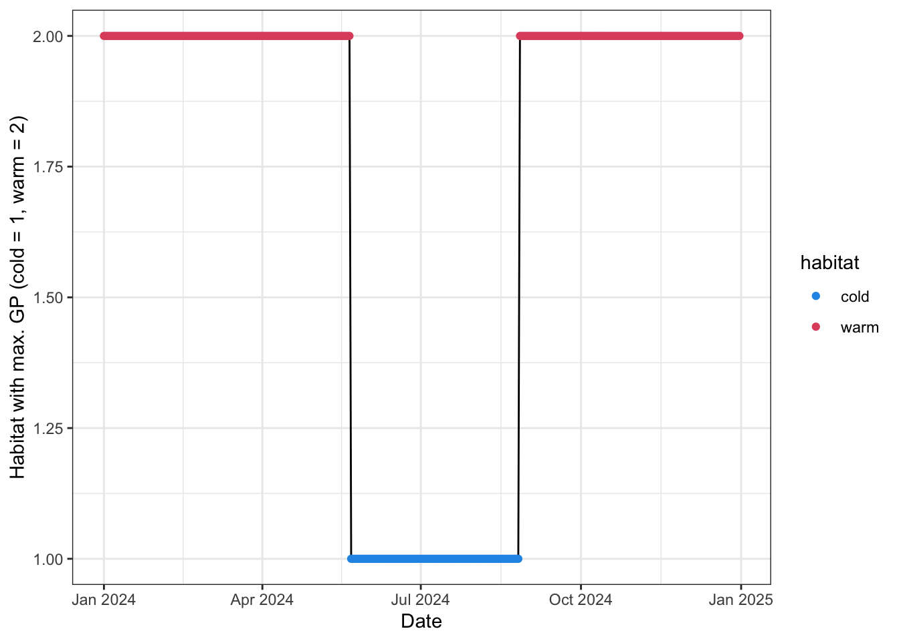
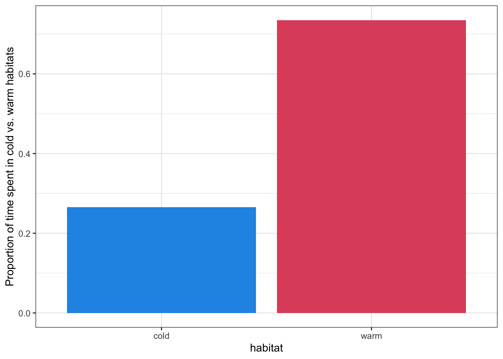
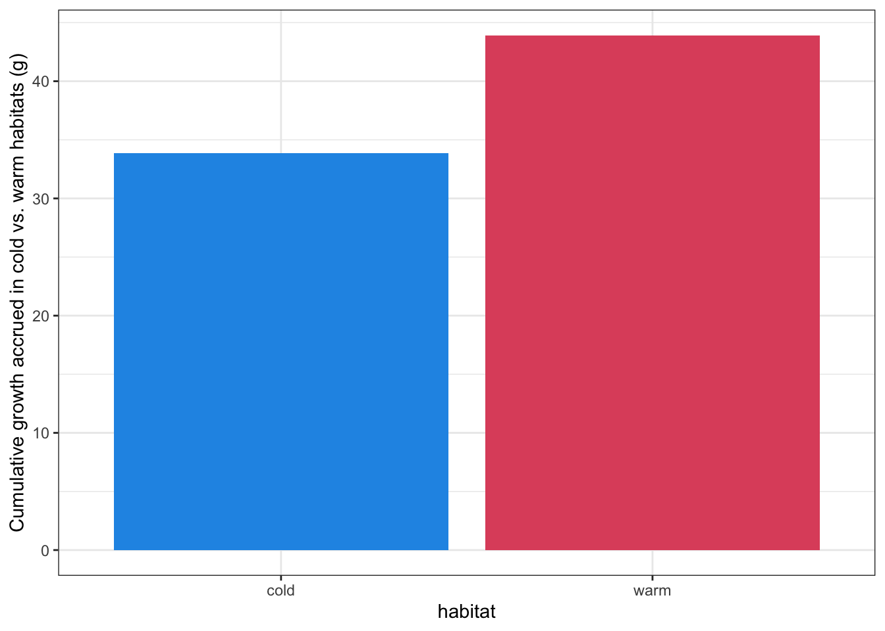
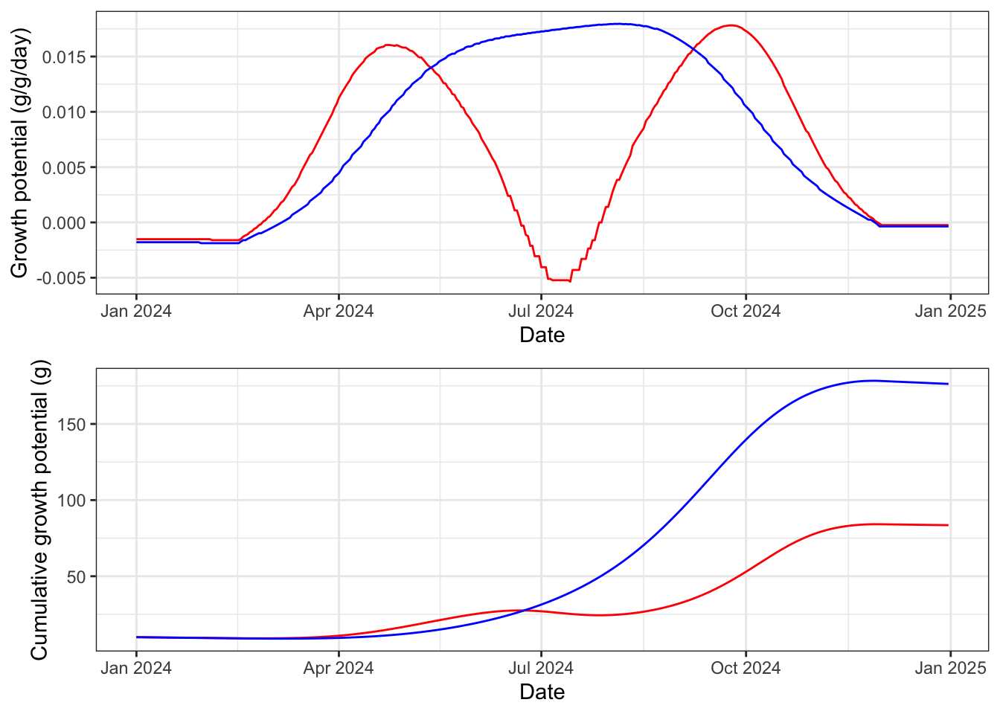
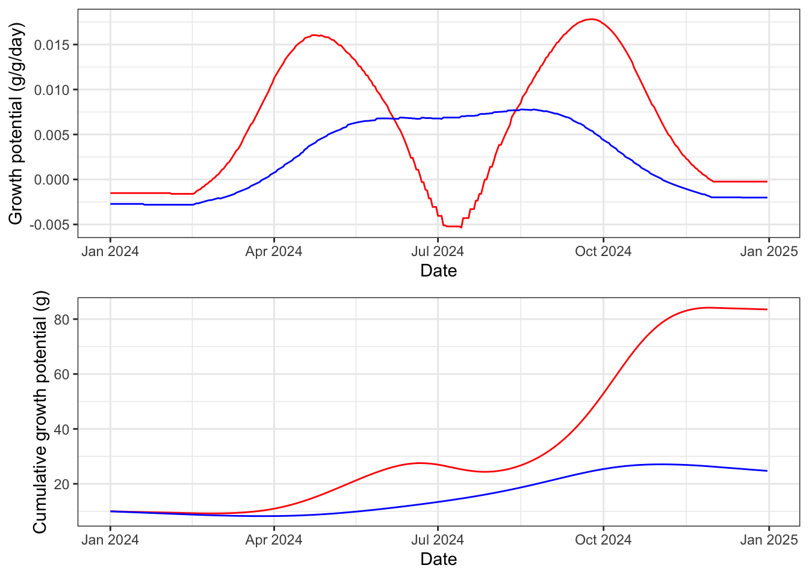

Code
load("data/wt.growth.array.RData")Purpose: Derive and visualize the growth regime in two alternative habitat patches sensu Armstrong et al. (2021).
Source dependencies
Load pre-calculated growth
load("data/wt.growth.array.RData")Derive a generic growth regime for a 10 gram fish, sensu Armstrong et al. (2021). For simplicity, I did not simulate changing growth potential due to increase in fish mass over the course of the year, as in the NCC paper.
Notes:
Objects
waterTemps <- cbind("pid" = seq(1, length(seq(0.1, 25, 0.1))),"WT" = seq(0.1, 25, 0.1))
rations <- seq(0.02, 0.17, 0.001)
weights <- seq(1, 1500, 1)Get growth potential by temperature for a 10 gram fish, fed at ~max ration
# get relative growth rates for a 10 g fish across range of water temps
grate_df <- tibble(temp = waterTemps[,2],
grate_ggd = wt.growth[,151,10]) %>%
mutate(temp = trimws(temp))
# calculate growth potential (g/d/d) and cumulative growth (g) across warm and cold patches and for an "optimal mover"
growthregime_df <- habitat_df %>%
mutate(temp_warm = trimws(temp_warm),
temp_cold = trimws(temp_cold)) %>%
left_join(grate_df, by = c("temp_warm" = "temp")) %>% rename(grpot_warm = grate_ggd) %>%
left_join(grate_df, by = c("temp_cold" = "temp")) %>% rename(grpot_cold = grate_ggd) %>%
mutate(grpot_track = pmax(grpot_warm, grpot_cold)) %>%
mutate(cumul_growth_warm = cumsum(grpot_warm*10),
cumul_growth_cold = cumsum(grpot_cold*10),
cumul_growth_track = cumsum(grpot_track*10),
habitat = case_when(
grpot_cold > grpot_warm ~ "cold",
grpot_warm > grpot_cold ~ "warm",
TRUE ~ "tie"
))
head(growthregime_df)# A tibble: 6 × 13
date doy temp_warm temp_cold ration_warm ration_cold grpot_warm
<date> <int> <chr> <chr> <dbl> <dbl> <dbl>
1 2024-01-01 1 0.5 0.3 0.1 0.1 0.000670
2 2024-01-02 2 0.5 0.3 0.1 0.1 0.000670
3 2024-01-03 3 0.5 0.3 0.1 0.1 0.000670
4 2024-01-04 4 0.5 0.3 0.1 0.1 0.000670
5 2024-01-05 5 0.5 0.3 0.1 0.1 0.000670
6 2024-01-06 6 0.5 0.3 0.1 0.1 0.000670
# ℹ 6 more variables: grpot_cold <dbl>, grpot_track <dbl>,
# cumul_growth_warm <dbl>, cumul_growth_cold <dbl>, cumul_growth_track <dbl>,
# habitat <chr>Plot growth regimes (growth potential and g/g/d)
p1 <- growthregime_df %>% ggplot() +
geom_line(aes(x = date, y = grpot_warm), col = 2) +
geom_line(aes(x = date, y = grpot_cold), col = 4) +
theme_bw() +
xlab("Date") +
ylab("Growth potential (g/g/day)") +
labs(title = "Warm vs. cold habitats")
p2 <- growthregime_df %>% ggplot() +
geom_line(aes(x = date, y = grpot_track), col = 1, linetype = "dashed") +
theme_bw() +
xlab("Date") +
ylab("Growth potential (g/g/day)") +
labs(title = "Optimal mover")
ggarrange(p1, p2, ncol = 2)
Plot cumulative growth
growthregime_df %>% ggplot() +
geom_line(aes(x = date, y = cumul_growth_warm, color = "Warm resident")) +
geom_line(aes(x = date, y = cumul_growth_cold, color = "Cold resident")) +
geom_line(aes(x = date, y = cumul_growth_track, color = "Optimal mover"), linetype = "dashed") +
scale_color_manual(values = c("Warm resident" = 2, "Cold resident" = 4, "Optimal mover" = 1)) +
theme_bw() +
xlab("Date") +
ylab("Cumulative growth (g)")
Plot habitat use, i.e., temporal change in the habitat where growth potential is maximized.
growthregime_df %>%
mutate(habitat_num = as.numeric(as.factor(habitat))) %>%
ggplot() +
geom_line(aes(x = date, y = habitat_num)) +
geom_point(aes(x = date, y = habitat_num, color = habitat)) +
theme_bw() +
scale_color_manual(values = c("cold" = 4, "warm" = 2)) +
xlab("Date") +
ylab("Habitat with max. GP (cold = 1, warm = 2)")
Contributions of warm vs. cold patches
# time
growthregime_df %>%
group_by(habitat) %>%
summarize(ndays = n()) %>%
mutate(habitat = factor(habitat)) %>%
ggplot() +
geom_bar(aes(x = habitat, y = ndays/dim(growthregime_df)[1], fill = habitat), stat = "identity") +
theme_bw() + theme(legend.position = "none") +
scale_fill_manual(values = c("cold" = 4, "warm" = 2)) +
ylab("Proportion of time spent in cold vs. warm habitats")
# cumulative growth accrued
growthregime_df %>%
group_by(habitat) %>%
summarize(cumul_grpot = sum(grpot_track*10)) %>%
mutate(habitat = factor(habitat)) %>%
ggplot() +
geom_bar(aes(x = habitat, y = cumul_grpot, fill = habitat), stat = "identity") +
theme_bw() + theme(legend.position = "none") +
scale_fill_manual(values = c("cold" = 4, "warm" = 2)) +
ylab("Cumulative growth accrued in cold vs. warm habitats (g)")
Here, I simulate the growth regime where growth potential is an additional function of fish mass to generate more realistic size trajectories.
Note that growth trajectories are super sensitive to ration size. Simulating growth under the highest ration size (0.17) generates very unrealistic growth outputs. In Armstrong et al. (2021), Fullerton’s IBM simulations allowed ration to vary between 0.02 and 0.07 across river networks.
Ration size is equal between warm and cold habitat patches (0.10)
# set up table
growthregime_df_2 <- habitat_df %>%
# bind_rows(temp_df %>% mutate(date = date + years(1))) %>%
# bind_rows(temp_df %>% mutate(date = date + years(2))) %>%
# bind_rows(temp_df %>% mutate(date = date + years(3))) %>%
# bind_rows(temp_df %>% mutate(date = date + years(4))) %>%
# bind_rows(temp_df %>% mutate(date = date + years(5))) %>%
mutate(grpot_warm = NA, grpot_cold = NA, weight_warm = NA, weight_cold = NA) %>%
mutate(temp_warm = trimws(temp_warm), temp_cold = trimws(temp_cold)) #%>%
# filter(date >= date("2024-06-01"))
# set starting weight
startweight <- 10
# habitat specific ration
ration_cold <- 0.10
ration_warm <- 0.10
for (i in 1:dim(growthregime_df_2)[1]) {
if (i == 1) {
grpot_warm <- wt.growth[which(waterTemps[,2] == growthregime_df_2$temp_warm[i]),which(rations == ration_warm),startweight]
grpot_cold <- wt.growth[which(waterTemps[,2] == growthregime_df_2$temp_cold[i]),which(rations == ration_cold),startweight]
weight_warm <- startweight + (startweight * grpot_warm)
weight_cold <- startweight + (startweight * grpot_cold)
growthregime_df_2$grpot_warm[i] <- grpot_warm
growthregime_df_2$grpot_cold[i] <- grpot_cold
growthregime_df_2$weight_warm[i] <- weight_warm
growthregime_df_2$weight_cold[i] <- weight_cold
} else {
grpot_warm <- wt.growth[which(waterTemps[,2] == growthregime_df_2$temp_warm[i]),which(rations == ration_warm),round(growthregime_df_2$weight_warm[i-1], digits = 0)]
grpot_cold <- wt.growth[which(waterTemps[,2] == growthregime_df_2$temp_cold[i]),which(rations == ration_cold),round(growthregime_df_2$weight_cold[i-1], digits = 0)]
weight_warm <- growthregime_df_2$weight_warm[i-1] + (growthregime_df_2$weight_warm[i-1] * grpot_warm)
weight_cold <- growthregime_df_2$weight_cold[i-1] + (growthregime_df_2$weight_cold[i-1] * grpot_cold)
growthregime_df_2$grpot_warm[i] <- grpot_warm
growthregime_df_2$grpot_cold[i] <- grpot_cold
growthregime_df_2$weight_warm[i] <- weight_warm
growthregime_df_2$weight_cold[i] <- weight_cold
}
# print(i)
}
p1 <- growthregime_df_2 %>% ggplot() +
geom_line(aes(x = date, y = grpot_warm), col = "red") +
geom_line(aes(x = date, y = grpot_cold), col = "blue") +
theme_bw() +
xlab("Date") +
ylab("Growth potential (g/g/day)")
p2 <- growthregime_df_2 %>% ggplot() +
geom_line(aes(x = date, y = weight_warm), col = "red") +
geom_line(aes(x = date, y = weight_cold), col = "blue") +
# geom_line(aes(x = date, y = cumul_grpot_track), col = "purple", linetype = "dashed") +
theme_bw() +
xlab("Date") +
ylab("Cumulative growth potential (g)")
ggarrange(p1, p2)
Ration size is 30% lower in the cold habitat
# set up table
growthregime_df_2 <- habitat_df %>%
# bind_rows(temp_df %>% mutate(date = date + years(1))) %>%
# bind_rows(temp_df %>% mutate(date = date + years(2))) %>%
# bind_rows(temp_df %>% mutate(date = date + years(3))) %>%
# bind_rows(temp_df %>% mutate(date = date + years(4))) %>%
# bind_rows(temp_df %>% mutate(date = date + years(5))) %>%
mutate(grpot_warm = NA, grpot_cold = NA, weight_warm = NA, weight_cold = NA) %>%
mutate(temp_warm = trimws(temp_warm), temp_cold = trimws(temp_cold)) #%>%
# filter(date >= date("2024-06-01"))
# set starting weight
startweight <- 10
# habitat specific ration
ration_cold <- 0.07
ration_warm <- 0.10
for (i in 1:dim(growthregime_df_2)[1]) {
if (i == 1) {
grpot_warm <- wt.growth[which(waterTemps[,2] == growthregime_df_2$temp_warm[i]),which(rations == ration_warm),startweight]
grpot_cold <- wt.growth[which(waterTemps[,2] == growthregime_df_2$temp_cold[i]),which(rations == ration_cold),startweight]
weight_warm <- startweight + (startweight * grpot_warm)
weight_cold <- startweight + (startweight * grpot_cold)
growthregime_df_2$grpot_warm[i] <- grpot_warm
growthregime_df_2$grpot_cold[i] <- grpot_cold
growthregime_df_2$weight_warm[i] <- weight_warm
growthregime_df_2$weight_cold[i] <- weight_cold
} else {
grpot_warm <- wt.growth[which(waterTemps[,2] == growthregime_df_2$temp_warm[i]),which(rations == ration_warm),round(growthregime_df_2$weight_warm[i-1], digits = 0)]
grpot_cold <- wt.growth[which(waterTemps[,2] == growthregime_df_2$temp_cold[i]),which(rations == ration_cold),round(growthregime_df_2$weight_cold[i-1], digits = 0)]
weight_warm <- growthregime_df_2$weight_warm[i-1] + (growthregime_df_2$weight_warm[i-1] * grpot_warm)
weight_cold <- growthregime_df_2$weight_cold[i-1] + (growthregime_df_2$weight_cold[i-1] * grpot_cold)
growthregime_df_2$grpot_warm[i] <- grpot_warm
growthregime_df_2$grpot_cold[i] <- grpot_cold
growthregime_df_2$weight_warm[i] <- weight_warm
growthregime_df_2$weight_cold[i] <- weight_cold
}
# print(i)
}
p1 <- growthregime_df_2 %>% ggplot() +
geom_line(aes(x = date, y = grpot_warm), col = "red") +
geom_line(aes(x = date, y = grpot_cold), col = "blue") +
theme_bw() +
xlab("Date") +
ylab("Growth potential (g/g/day)")
p2 <- growthregime_df_2 %>% ggplot() +
geom_line(aes(x = date, y = weight_warm), col = "red") +
geom_line(aes(x = date, y = weight_cold), col = "blue") +
# geom_line(aes(x = date, y = cumul_grpot_track), col = "purple", linetype = "dashed") +
theme_bw() +
xlab("Date") +
ylab("Cumulative growth potential (g)")
ggarrange(p1, p2)